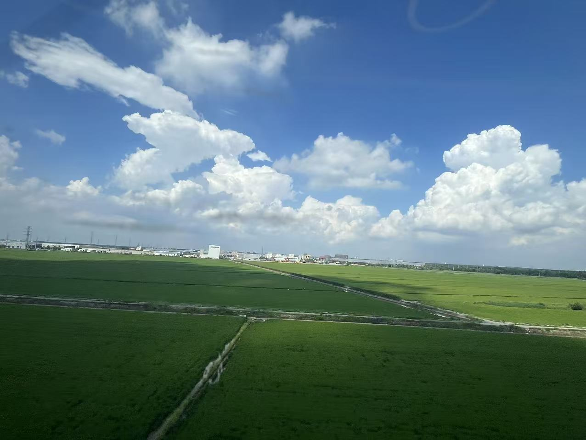

自我成长 / 001
写给一年后的自己

最近常看一个餐饮门店博主，大家叫他勇哥。他平时给刚开始做餐饮的人支招，镜头里经常出现一些莽撞又有趣的创业者，于是也留下了不少让人哭笑不得的切片。
有一次，我竟然刷到一家开在祥源城的店。因为离得近，我还特意带着老婆孩子去踩了踩点。后来再路过时，那家店已经关门了。
看勇哥的视频，除了冲突和笑料，确实也能学到一些餐饮常识：怎么看选址和人流，产品怎么搭配，成本与毛利如何计算。可看得久了，我也渐渐产生一种感觉：这些判断常常停留在方法论层面。很少看到他真正进入一家具体的门店，长时间面对它的细节、约束和变化，再一点点把问题解决掉。
这并不是说方法论没有价值。恰恰相反，勇哥表达能力强、人也聪明，能够快速识别问题，再把经验总结成大多数人都听得懂的建议。这很难得。
但“看出问题”和“把问题解决”之间，始终隔着一段很长的路。
真正从 0 到 1 做过一件事，才会知道那些漂亮的判断，在现实里会遇到多少摩擦：信息不完整，资源不够，人不一定配合，方向也可能随时变化。许多细节只有亲手做过，才会进入自己的身体。
从方法论走进现场
想到这里，我意识到，这也是写给我自己的提醒。
去年从 0 到 1 做测试，我对整个过程有过很深的感知。今年参与 Duke 的项目时，很多事情做起来就顺了。并不是因为问题变简单了，而是因为上一段实践留下的判断、节奏和手感，已经变成了我能力的一部分。
但在今年这条新的路上，我参与得还不够深。有些时候，我仍然站在稍远的地方总结、判断，却没有真正走进现场，承担从模糊到清晰、从想法到结果的全过程。
所以，接下来电路这件事，我一定要亲手从 0 到 1 推成。
不只是把一个方案讲清楚，而是要把架构、技术路线和演进思路真正做出来；也不只是解决技术问题，还要理解其中的协作关系，处理分歧，吸引合适的人一起前进。
过去我在这方面有些偷懒。尤其 Lucas 和 Shawn 在的时候，有些关系的处理，我没有投入足够的心力。现在越来越觉得，理解人、理解组织、理解每个人行动背后的需要，是一件很有意思、也很重要的事。很多复杂问题，最后并不是技术解不出来，而是需要有人把人和事真正连接起来。
希望一年后的我回头看时，不只是又积累了一套关于电路、架构和团队的方法论，而是真的把一件难事推进到了新的位置。
生活最终会塑造一个人
工作之外，我也想给一年后的自己留下另一句话：
你现在怎样生活，将来就会成为怎样的人。
从 2021 年开始，我其实一直在尝试实践这句话。但看到 Duke 这几年的变化，我还是觉得自己做得不够。他对生活有热爱，也越来越清楚自己想要什么。这种清楚不是口号，而是体现在每天怎么选择、怎么投入时间，以及怎样与世界相处。
我希望到了 2027 年，自己也能成为一个更自洽的人。知道真正重要的是什么，也愿意为它安排自己的时间；既能投入工作，也不会把生活推迟到某个遥远的以后。
这次出差路上，我看到一本很喜欢的书——《色彩艺术》。翻开以后突然觉得，如果从未学习过色彩，也许我们就很难真正看见大自然的美。世界一直在那里，但一个人能看见多少，取决于他曾经认真学习和感受过什么。
老祖宗说，书中自有黄金屋。现在理解，它未必是书里藏着一个现成答案，而是阅读会给人新的眼睛。学过色彩，才能看见光影；进入实践，才能理解方法；认真生活，才能逐渐知道自己想成为谁。
少一点隔岸观火，多一点亲自下场。把电路从 0 到 1 推成，也把自己的生活一点点过成想要的样子。
到那时，希望你已经不再只是会谈论远方，而是真的向前走了一段。